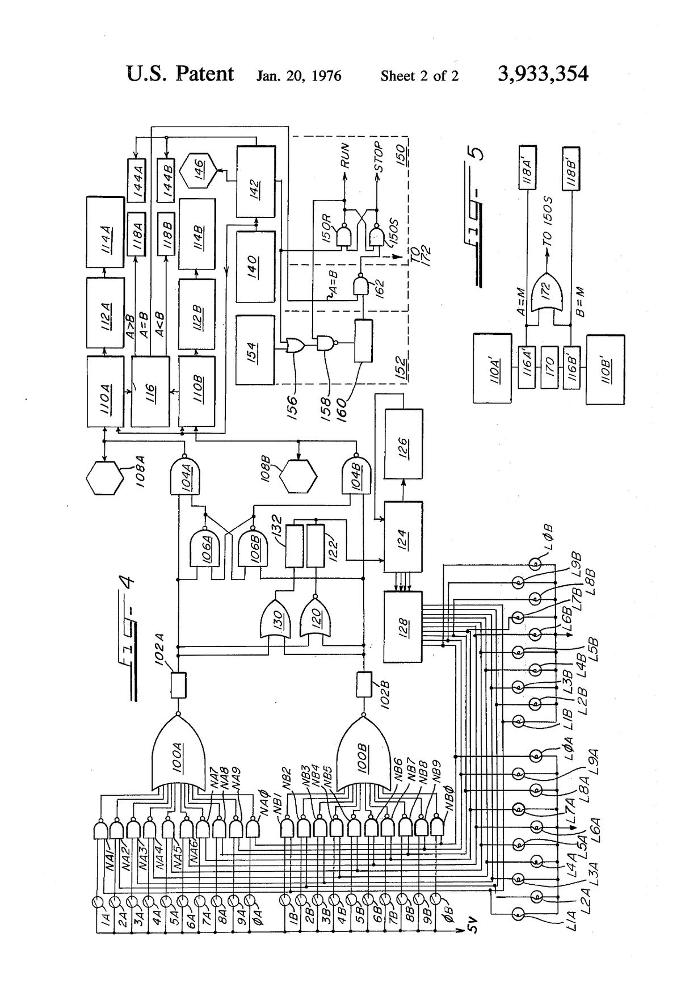
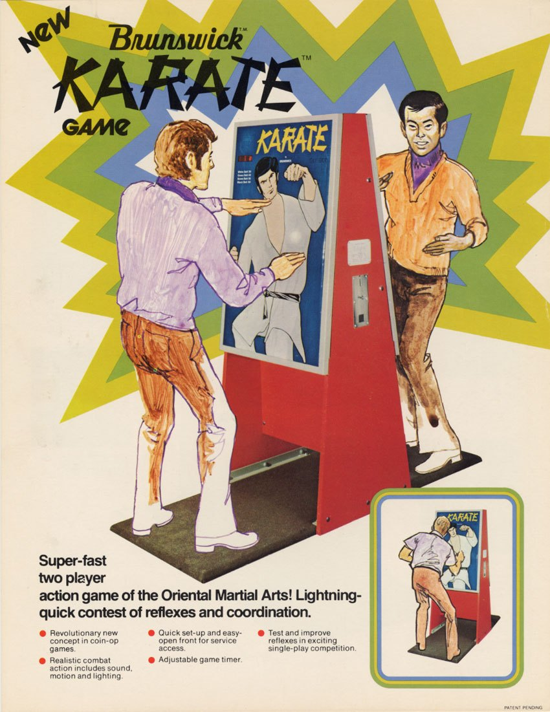

1974
Brunswick Corporation (US patent 3,933,354 by Adolph E. Goldfarb & Erwin Benkoe)
Brunswick "Karate" Reflex Testing Amusement Device (1974)
A coin-op reflex machine whose interface is a life-size combatant you physically strike at lit target points

Overview
Deep dive
Media
